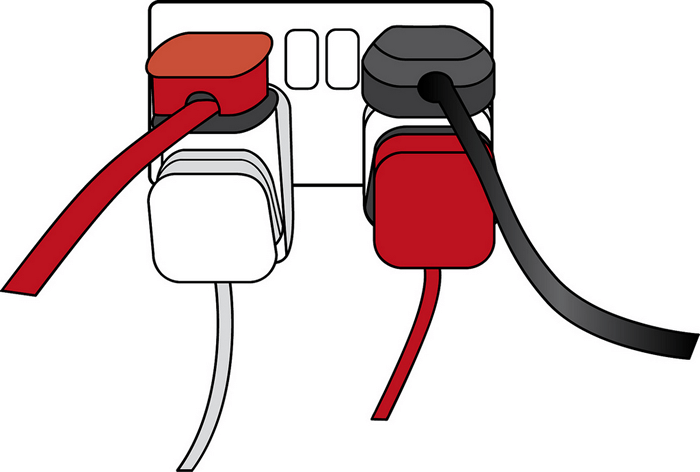
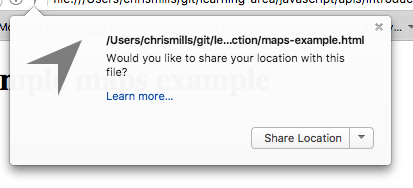
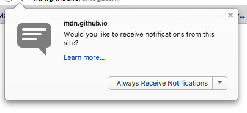

This article needs an editorial review. How you can help.
First up, we'll start by looking at APIs from a high level — what are they, how do they work, how do you use them in your code, and how are they structured? We'll also take a look at what the different main classes of APIs are, and what kind of uses they have.
| Prerequisites: | Basic computer literacy, a basic understanding of HTML and CSS. |
|---|---|
| Objective: | To gain familiarity with APIs, what they can do, and how you can use them in your code. |
What are APIs?
Application Programming Interfaces (APIs) are constructs made available in programming languages to allow developers to create complex functionality more easily. They abstract more complex code away from you, providing some easier syntax to use in its place.
As a real world example, think about the electricity supply in your house, apartment, or other dwelling. If you want to use an appliance in your house, you simply plug it into a plug socket and it works. You don't try to wire it directly into the power supply — to do so would be really inefficient and, if you are not an electrician, difficult and dangerous to attempt.

Image source: Overloaded plug socket by The Clear Communication People, on Flickr.
In the same way, if you want to say, program some 3D graphics, it is a lot easier to do it using a higher level language such as JavaScript or Python, rather than try to directly write low level code that directly controls the computer's GPU or other graphics functions.
APIs in client-side JavaScript
Client-side JavaScript in particular has many APIs available to it — these are not part of the JavaScript language itself, rather they are built on top of the core JavaScript language, providing you with extra superpowers to use in your JavaScript code. They generally fall into two categories:
- Browser APIs are built into your web browser, and are able to expose data from the browser and surrounding computer environment and do useful complex things with it. For example, the Geolocation API provides some simple JavaScript constructs for retrieving location data so you can say, plot your location on a Google Map. In the background, the browser is actually using some complex lower-level code (e.g. C++) to communicate with the device's GPS hardware (or whatever is available to determine position data), retrieve position data, and return it to the browser environment to use in your code. But again, this complexity is abstracted away from you by the API.
- Third party APIs are not built into the browser by default, and you generally have to grab their code and information from somewhere on the Web. For example, the Twitter API allows you to do things like displaying your latest tweets on your website. It provides a special set of constructs you can use to query the Twitter service and return specific information.

What can APIs do?
There are a huge number of APIs available in modern browsers that allow you to do a wide variety of things in your code. You can see this by taking a look at the MDN APIs index page. In particular, the most common categories of browser APIs you'll use (and which we'll cover in this module in greater detail) are:
- APIs for manipulating documents loaded into the browser (represented by the
Documentobject) and the environment they are running in (theWindowobject represents the current tab the browser is running in, and theNavigatorobject represents the state and identity of the browser). The most obvious example is the DOM (Document Object Model) API, which allows you to manipulate HTML and CSS — creating, removing and changing HTML, dynamically applying new styles to your page, etc. Everytime you see a popup window appear on a page, or some new content displayed for example, that's the DOM in action. - APIs that fetch data from the server to update sections of a webpage without having to load an entire new page are very commonly used. This seemingly small detail has had a huge impact on the performance and behaviour of sites — if you just need to update a stock listing or list of available new stories, doing it instantly without having to load the entire page again can make the site or app feel much more responsive and "snappy". APIs that make this possible include
XMLHttpRequestand the Fetch API. You may also come across the term AJAX, which standards for Asynchronous JavaScript and XML — this was the buzzword term that originally popularized this kind of web page data update around 2005, withXMLHttpRequestbeing used to transfer the data, and XML being used as the data format. These days, the data is more likely to be JSON or some other format, but the principle remains the same. - APIs for drawing and manipulating graphics are now widely supported in browsers — the most popular ones are Canvas and WebGL, which allow you to programmatically update the pixel data contained in an HTML
<canvas>element to create 2D and 3D scene respectively. For example, you might draw shapes such as rectangles or circles, import an image onto the canvas, and apply a filter to it such as sepia or grayscale using the Canvas API, or create a complex 3D scene with lighting and textures using WebGL. Such APIs are often combined with APIs for creating animation loops (such aswindow.requestAnimationFrame()) and others to make constantly updating scenes like cartoons and games. - Audio and Video APIs like
HTMLMediaElement, the Web Audio API, and WebRTC allow you to do really interesting things with multimedia such as creating custom UI controls for playing audio and video, displaying text tracks like captions and subtitles along with your videos, grabbing video from your web camera to be manipulated via a canvas (see above) or displayed on someone else's computer in a web conference, or adding effects to audio tracks (such as gain, distortion, panning, etc). - Device APIs are basically APIs for manipulating and retrieving data from modern device hardware in a way that is useful for web apps. We've already talked about the Geolocation API accessing the device's location data so you can plot your position on a map. Other examples include telling the user that a useful update is available on a web app via system notifications (see the Notifications API) or vibration hardware (see the Vibration API).
- Client-side storage APIs are becoming a lot more widespread in web browsers — the ability to store data on the client-side is very useful if you want to create an app that will save its state between page loads, and perhaps even work when the device is offline. There are a number of options available, e.g. traditional methods like cookies, simple name/value storage with the Web Storage API, and more complex tabular data storage with the IndexedDB API.
Third party APIs come in a large variety; some of the more popular ones that you are likely to make use of sooner or later are:
- The Twitter API, which allows you to do things like displaying your latest tweets on your website.
- The Google Maps API allows you to do all sorts of things with maps. This is now an entire suite of APIs, which handle a wide variety of tasks, as evidenced by the Google Maps API Picker.
- The Facebook suite of APIs enables you to use various parts of the Facebook ecosystem to benefit your app, for example by providing app login using Facebook login, accepting in-app payments, rolling out targetted ad campaigns, etc.
- The YouTube API, which allows you to embed YouTube videos on your site, search YouTube, build playlists, and more.
- The Twilio API, which provides a framework for building voice and video call functionality into your app, sending SMS/MMS from your apps, and more.
You can find information on a lot more 3rd party APIs at the Programmable Web API directory.
How do APIs work?
Different JavaScript APIs work in slightly different ways, but generally they have common features and similar themes to how they work.
They are based on objects
APIs are interacted with in your code using one of more JavaScript objects, which serve as containers for the data the API uses (contained in object properties), and the functionality the API makes available (contained in object methods).
Note: If you are not already familiar with how objects work, you should go back and work through our JavaScript objects module before continuing.
Let's return to the example of the Geolocation API — this is a very simple API that consists of a few simple objects:
Geolocation, which contains three methods for controlling the retrieval of geo data.Position, which represents the position of a device at a given time — this contains aCoordinatesobject that contains the actual position information, plus a timestamp representing the given time.Coordinates, which contains a whole lot of useful data on the device position, including latitude and longitude, altitude, velocity and direction of movement, and more.
So how do these objects interact? If you look at our maps-example.html example (see it live also), you'll see the following code:
navigator.geolocation.getCurrentPosition(function(position) {
var latlng = new google.maps.LatLng(position.coords.latitude,position.coords.longitude);
var myOptions = {
zoom: 8,
center: latlng,
mapTypeId: google.maps.MapTypeId.TERRAIN,
disableDefaultUI: true
}
var map = new google.maps.Map(document.getElementById("map_canvas"), myOptions);
});
We first want to use the Geolocation.getCurrentPosition() method to return the current location of our device. The browser's Geolocation object is accessed by calling the Navigator.geolocation property, so we start off by using
navigator.geolocation.getCurrentPosition(function(position) { ... });
This is equivalent to doing something like
var myGeo = navigator.geolocation;
myGeo.getCurrentPosition(function(position) { ... });
But we can use the dot syntax to chain our property/method access together, reducing the number of lines we have to write.
The Geolocation.getCurrentPosition() method only has a single mandatory parameter, which is an anonymous function that will run when the device's current position has been successfully retrieved. This function itself has a parameter, which contains a Position object representing the current position data.
This pattern of invoking a function when an operation has been completed is very common in JavaScript APIs as a solution to the problem of asynchronous operations — making sure one operation has completed before trying to use the data the operation returns in another operation. The invoked functions are called callback functions. Because getting the device's current position relies on an external component (the device's GPS or other geolocation hardware), we can't guarantee that it will be done in time to just immediately use the data it returns. Therefore, something like this wouldn't work:
var position = navigator.geolocation.getCurrentPosition(); var myLatitude = position.coords.latitude;
If the first line had not yet returned its result, the second line would error, because the position data would not yet be available. For this reason, APIs are designed to use callback functions, or the more modern system of Promises, which were made available in ECMAScript 6 and are widely used in newer APIs.
You'll also see above that we are combining the Geolocation API with a third party API — the Google Maps API — which we are using to plot the location returned by getCurrentPosition() on a Google Map. To do this, we first create a LatLng object instance using the google.maps.LatLng() constructor, which takes our geolocated Coordinates.latitude and Coordinates.longitude values as parameters:
var latlng = new google.maps.LatLng(position.coords.latitude,position.coords.longitude);
This object is itself set as the value of the center property of an options object that we've called myOptions. We then then create an object instance to represent our map by calling the google.maps.Map() constructor, passing it two parameters — a reference to the <div> element we want to render the map on (with an ID of map_canvas), and the options object we defined just above it.
var myOptions = {
zoom: 8,
center: latlng,
mapTypeId: google.maps.MapTypeId.TERRAIN,
disableDefaultUI: true
}
var map = new google.maps.Map(document.getElementById("map_canvas"), myOptions);
With this done, our map now renders.
This last block of code highlights two common patterns you'll see across many APIs. First of all, API objects commonly contain constructors, which are invoked to create instances of those objects that you'll use to write your program. Second, API objects often have several options available that can be tweaked to get the exact environment you want for your program. API constructors commonly accept options objects as parameters, which is where you'd set such options.
They have recognisable entry points
When using an API, you should make sure you know where the entry point is for the API. In The Geolocation API, this is pretty simple — it is the Navigator.geolocation property, which returns the browser's Geolocation object that all the useful geolocation methods are available inside.
The Document Object Model (DOM) API has an even simpler entry point — its features tend to be found hanging off the Document object, or any instance of an HTML element that you want to affect in some way, for example:
var em = document.createElement('em'); // create a new em element
var para = document.querySelector('p'); // reference an existing p element
em.textContent = 'Hello there!'; // give em some text content
para.appendChild(para); // embed em inside para
Other APIs have slightly more complex entry points, often involving creating a specific context for the API code to be written in. For example, the Canvas API's context object is created by getting a reference to the <canvas> element you want to draw on, and then calling its HTMLCanvasElement.getContext() method:
var canvas = document.querySelector('canvas');
var ctx = canvas.getContext('2d');
Anything that we want to do to the canvas is then achieved by calling properties and methods of the content object (which is an instance of CanvasRenderingContext2D), for example:
Ball.prototype.draw = function() {
ctx.beginPath();
ctx.fillStyle = this.color;
ctx.arc(this.x, this.y, this.size, 0, 2 * Math.PI);
ctx.fill();
};
Note: You can see this code in action in our bouncing balls demo (see it running live also).
They use events to handle changes in state
We already discussed events earlier on in the course, in our Introduction to events article — this article looks in detail at what client-side web events are and how they are used in your code. If you are not already familiar with how client-side web API events work, you should go and read this article first before continuing.
Some web APIs contain no events, but some contain a number of events. The handler properties that allow us to run functions when events fire are generally listed in our reference material in separate "Event handlers" sections. As a simple example, instances of the XMLHttpRequest object (each one represents an HTTP request to the server to retrieve a new resource of some kind) have a number of events available on them, for example the load event is fired when a response has been successfully returned containing the requested resource, and it is now available.
The following code provides a simple example of how this would be used:
var requestURL = 'https://mdn.github.io/learning-area/javascript/oojs/json/superheroes.json';
var request = new XMLHttpRequest();
request.open('GET', requestURL);
request.responseType = 'json';
request.send();
request.onload = function() {
var superHeroes = request.response;
populateHeader(superHeroes);
showHeroes(superHeroes);
}
Note: You can see this code in action in our ajax.html example (see it live also).
.The first five lines specify the location of resource we want to fetch, create a new instance of a request object using the XMLHttpRequest() constructor, open an HTTP GET request to retrieve the specified resource, specify that the response should be sent in JSON format, then send the request.
The onload handler function then specifies what we do with the response. We know the response will be successfully returned and available after the load event has required (unless an error occurred), so we save the response containing the returned JSON in the superHeroes variable, then pass it to two different functions for further processing.
They have additional security mechanisms where appropriate
WebAPI features are subject to the same security considerations as JavaScript and other web technologies (for example same-origin policy), but they sometimes have additional security mechanisms in place. For example, some of the more modern WebAPIs will only work on pages served over HTTPS due to them transmitting potentially sensitive data (examples include Service Workers and Push).
In addition, some WebAPIs request permission to be enabled from the user once calls to them are made in your code. As an example, you may have noticed a dialog like the following when loading up our earlier Geolocation example:

The Notifications API asks for permission in a similar fashion:

These permission prompts are given to users for security — if they weren't in place, then sites could start secretly tracking your location without you knowing it, or spamming you with a lot of annoying notifications.
Summary
At this point you should have a good idea of what APIs are, how they work, and what you can do with them in your JavaScript code. You are probably excited to start actually doing some fun things with specific APIs, so let's go! Next up, we'll look at manipulating documents with the Document Object Model (DOM).